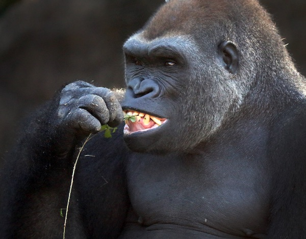
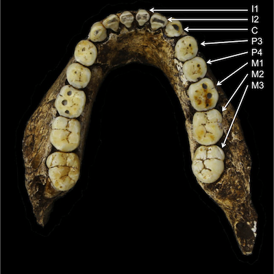

Small project 1: Ape teeth
Introduction
In this small project, you will think of conceptual questions to ask of a data set of ape teeth measurements, and create exploratory plots to begin to answer those questions.

Description of the data
- Data source: http://anthropologicaldata.free.fr/
Columns
- Species: ape species the tooth belongs to, including:
- Gorilla gorilla (Western gorilla)
- Pan troglodytes (Common chimpanzee)
- Pongo pygmaeus (Bornean orangutan)
- Site: where specimen is located
- Specimen: specimen ID number
- Sex: Male or Female
- Source: where data come from
- Tooth: name of tooth (see below). Possible values are I1, I2, C, P3, P4, M1, M2, and M3.

- ToothClass: Incisor, Canine, Premolar, or Molar
- Side: Left or Right
- Position: Superior (“upper jaw”) or Inferior (“lower jaw”)
- MD: Mesiodistal crown diameter in mm (how “broad” the tooth is).
- BL: Buccolinual crown diameter in mm (how “thick” the tooth is along the cheek–tongue axis).
Note that there are no crown cervico-occlusal (“height”) measurements in the data .

Ape fact sheets
The following short fact sheets about these great apes provide general information about diet, social organization, and mating system. These may or may not be helpful for formulating your questions.
Instructions
Content Instructions
- Think of three (and only three!) conceptual questions about the ape teeth data. To help guide your thinking here, consider how individuals vary both within and between species, and think about what the different kinds of teeth do for different individual animals.
- Clearly state each question in your report. You might want to create different sections for your different questions.
- Using
ggplot2, create at least one plot for each question that helps you to answer the question. For each plot, provide an explanation for why you chose the type of plot (e.g. scatterplot, boxplot, bar chart, histogram, etc.), and why you believe that it is best for showing the information related to your question. - You must use at least three different primary geoms.
- Answer your questions by interpreting your plots and identifying any trends that they reveal (or do not reveal).
- In total, your text related to the conceptual questions, plot design decisions, and interpretation should be in the neighborhood of 1000 words.
Formatting Instructions
- The project report should essentially look similar to some of our class activities, but it should include more narrative/explanation along with the code and plots.
- Please create your report in an Quarto file called
small-project-1_XX.qmd, where you substitute your initials for “XX” (for example, my report would be calledsmall-project-1_FC.qmd. - The Quarto report should show all of the code that you used to work with the data and produce your plots.
- Submit your report (in
.htmland.qmdformats) through Canvas.
Evaluation Criteria
Projects will be graded on workflow and presentation rather than particular conclusions. So don’t worry if you ask a question that fails to turn up interesting results! The data are what they are.
To receive full credit, I am looking for:
- Clear, coherent questions about the data. Questions end in a question mark!
- The questions should be conceptual, and should not prompt a specific analysis or plot.
- Each plot that you include in the report should help to answer one of your proposed questions, with a justification for why you chose to make the type of plot that you made. I am not looking for a dumping ground of many preliminary or poor-quality plots that you experimented with while trying to make a good one.
- Interpretation of your plots and responses to your proposed question.
- Statistical analysis is not necessary or expected. Just interpret your plots.